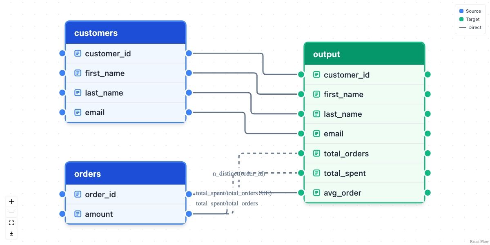
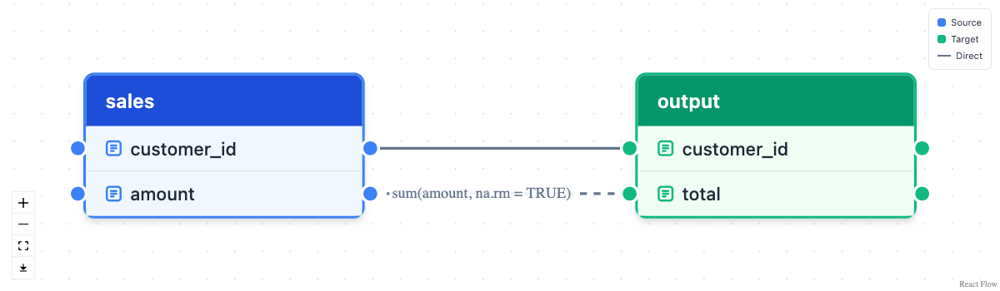
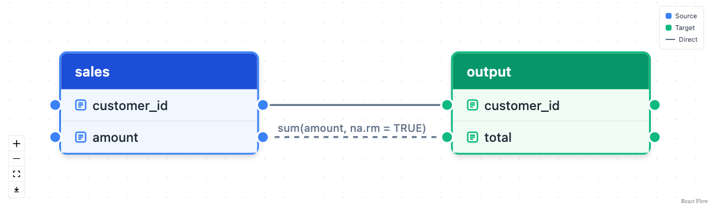
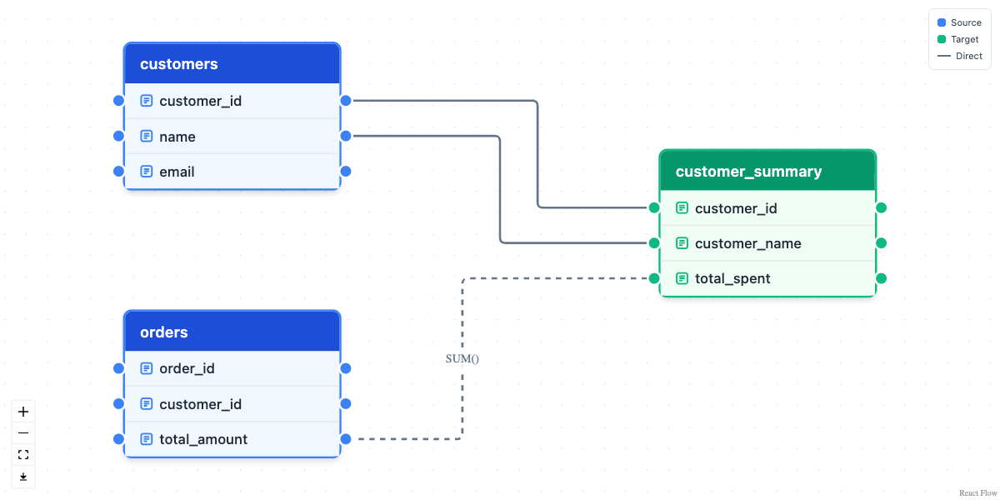

dplyneage draws interactive column-level lineage diagrams for dplyr and dbplyr pipelines. Pipe a query into extract_lineage() and it traces every output column back to the source columns it came from (through joins, aggregations, CTEs, unions, and computed expressions), then renders the result as a draggable, zoomable React Flow diagram with lineage_flow().
dbplyr, dtplyr, and arrow pipelines are analyzed in pure R by walking their lazy query trees, so no Python is involved. Raw SQL goes through sqlglot’s dedicated lineage engine instead, which means many dialects (DuckDB, PostgreSQL, Snowflake, BigQuery, …) work too, and duckplyr frames take the same route: their lazy tree lives inside duckdb, so it is rendered to SQL and parsed.
Installation
pak::pak("tgerke/dplyneage")dbplyr, dtplyr, and arrow pipelines need no Python at all, not even reticulate. For raw SQL input and duckplyr frames, install the reticulate package once; the Python dependency (sqlglot) is then provisioned automatically the first time it’s needed. See vignette("python-integration") if you manage your own Python environment.
Usage
Build a dplyr pipeline against a database as usual, then pipe it into extract_lineage() and lineage_flow():
library(dplyneage)
library(dplyr)
library(dbplyr)
library(duckdb)
con <- dbConnect(duckdb::duckdb(), ":memory:")
customers <- tibble(
customer_id = 1:5,
first_name = c("Alice", "Bob", "Charlie", "Diana", "Eve"),
last_name = c("Smith", "Jones", "Brown", "Wilson", "Davis"),
email = paste0(tolower(first_name), "@example.com")
)
orders <- tibble(
order_id = 1:10,
customer_id = rep(1:5, each = 2),
amount = c(100, 150, 200, 75, 300, 125, 180, 90, 250, 160)
)
copy_to(con, customers, "customers", overwrite = TRUE)
copy_to(con, orders, "orders", overwrite = TRUE)
tbl(con, "customers") |>
select(customer_id, first_name, last_name, email) |>
left_join(tbl(con, "orders"), by = "customer_id") |>
group_by(customer_id, first_name, last_name, email) |>
summarise(
total_orders = n_distinct(order_id),
total_spent = sum(amount, na.rm = TRUE),
.groups = "drop"
) |>
mutate(avg_order = total_spent / total_orders) |>
extract_lineage() |>
lineage_flow(height = "600px")
Behind that one pipe, extract_lineage():
- walks the pipeline’s lazy query tree in pure R, tracing every output column to its source columns (joins, aggregations, unions, and multi-source computed columns all resolve exactly)
- falls back to sqlglot’s lineage engine when the pipeline injects raw SQL with
dbplyr::sql(), or when you pass a SQL string directly (that path handles aliases, CTEs, and subqueries, and reads table schemas from your connection so unqualified columns attribute correctly)
The resulting diagram is fully interactive: drag tables to rearrange, zoom and pan, and hover columns to highlight their connections; when a column’s type or label was captured, the hover also shows a small card with both. Click a column and the diagram isolates its trace cone (everything upstream and downstream of that column) until you click again or press Escape. Computed columns carry their defining expression as an edge label (avg_order here, which traces through the two aggregates it divides back to orders.amount and orders.order_id), and aggregation edges animate. lineage_flow() also takes theme = "dark" (or "auto"), minimap = TRUE for an overview map, and a PNG download button lives in the zoom controls.
Local data frames
Lineage extraction needs the lazy query tree that dbplyr builds before anything executes. A pipeline on a plain tibble has no such tree (dplyr runs each verb immediately), so extract_lineage() can’t trace it. The fix is one line: dbplyr::tbl_lazy() wraps the frame in a lazy table with no database behind it, and the identical pipeline becomes traceable.
sales <- tbl_lazy(
data.frame(
customer_id = c(1, 1, 2),
amount = c(100, 250, 40)
),
name = "sales"
)
sales |>
group_by(customer_id) |>
summarise(total = sum(amount, na.rm = TRUE)) |>
extract_lineage() |>
lineage_flow(height = "350px")
A tbl_lazy() pipeline can’t be collected, since there is no database to run it against; lineage never runs the query, so a diagram doesn’t need one. To keep the pipeline runnable too, dbplyr::memdb_frame() builds the data in throwaway in-memory SQLite instead, and copy_to(dbplyr::memdb(), df, name = "df") does the same for a frame you already have. If the pipeline already runs on dtplyr, duckplyr, or arrow, no wrapping is needed at all: extract_lineage() reads those backends’ lazy structures directly. Lineage depends only on the pipeline’s structure, never on the data, so copying a slice with head(df) yields the same diagram as copying every row. Column label attributes on the frame (the convention haven and labelled use for imported SAS, SPSS, and Stata data) ride along too: they show as hover cards in the diagram, propagate to downstream columns along identity edges, and become field descriptions in the OpenLineage export. Database column comments (duckdb, postgres) and a labels argument feed the same machinery. See the Local data frames section of the getting-started vignette for more.
Multi-model pipelines
Real pipelines materialize layers: bronze tables feed a silver summary, silver feeds gold. Pass extract_lineage() a named list, one element per layer, and it stitches them into a single DAG: any source table whose name matches another element’s name links to that model’s node.
silver <- tbl(con, "orders") |>
group_by(customer_id) |>
summarise(total_spent = sum(amount, na.rm = TRUE), .groups = "drop")
invisible(compute(silver, name = "silver", temporary = TRUE))
gold <- tbl(con, "silver") |>
mutate(big_spender = total_spent > 400)
extract_lineage(list(silver = silver, gold = gold)) |>
lineage_flow(height = "450px")
Intermediate models render as orange transform nodes, terminal models as green targets, and impact questions now span the whole pipeline:
extract_lineage(list(silver = silver, gold = gold)) |>
lineage_upstream("gold.big_spender")
#> [1] "orders.amount" "silver.total_spent"Building diagrams by hand
For documentation or design work, you can construct lineage diagrams directly with create_table_node() and create_column_edge():
nodes <- list(
create_table_node(
table_name = "customers",
columns = c("customer_id", "name", "email"),
x = 0, y = 50,
table_type = "source"
),
create_table_node(
table_name = "orders",
columns = c("order_id", "customer_id", "total_amount"),
x = 0, y = 300,
table_type = "source"
),
create_table_node(
table_name = "customer_summary",
columns = c("customer_id", "customer_name", "total_spent"),
x = 500, y = 150,
table_type = "target"
)
)
edges <- list(
create_column_edge("customers", "customer_id", "customer_summary", "customer_id"),
create_column_edge("customers", "name", "customer_summary", "customer_name"),
create_column_edge("orders", "total_amount", "customer_summary", "total_spent",
label = "SUM()", animated = TRUE)
)
lineage_flow(nodes, edges, height = "600px")
Table types follow the color conventions used by dbt and SQLMesh:
| Type | Color | Use case |
|---|---|---|
source |
Blue | Raw/source tables |
transform |
Orange | Intermediate transformations |
target |
Green | Final output/materialized tables |
Works with ducklake
Because extract_lineage() accepts any dbplyr lazy table, it composes directly with packages that produce them, for example ducklake tables:
library(ducklake)
get_ducklake_table("orders") |>
dplyr::left_join(get_ducklake_table("customers"), by = "customer_id") |>
dplyr::group_by(customer_id) |>
dplyr::summarise(total = sum(amount, na.rm = TRUE)) |>
extract_lineage() |>
lineage_flow()The ducklake lineage vignette works through a full example: building a small lake, diagramming each layer of a bronze/silver/gold pipeline, and extracting lineage from time-travel queries.
Lineage as data
Diagrams are for people; the same lineage is also useful as plain data. lineage_edges() flattens it to one classified row per column edge, and lineage_upstream() / lineage_downstream() answer impact questions directly: for one "table.column", or for a whole table at once when you pass just its name. lineage_unused() runs the reverse check, listing every source or intermediate column with no path to any target: the columns you could drop without changing what ships.
lineage <- tbl(con, "orders") |>
left_join(tbl(con, "customers"), by = "customer_id") |>
group_by(customer_id, first_name) |>
summarise(total_spent = sum(amount, na.rm = TRUE), .groups = "drop") |>
mutate(big_spender = total_spent > 400) |>
extract_lineage()
lineage_edges(lineage)
#> source_table source_column target_table target_column transformation
#> 1 orders customer_id output customer_id identity
#> 2 customers first_name output first_name identity
#> 3 orders amount output total_spent aggregation
#> 4 orders amount output big_spender transformation
#> expression
#> 1 customer_id
#> 2 first_name
#> 3 sum(amount, na.rm = TRUE)
#> 4 total_spent > 400
lineage_upstream(lineage, "output.total_spent")
#> [1] "orders.amount"lineage_diff() compares two extractions and classifies every change by blast radius: breaking when the change reaches columns that anything downstream consumes, non-breaking for pure additions. lineage_check() turns that into a one-call CI gate: it errors on breaking changes and annotates the pull request on GitHub Actions (worked example). For interchange, lineage_json() gives you a small, stable document you can query with jq, feed to a data catalog, or commit next to your pipeline code:
lineage_json(lineage)
#> {
#> "format_version": 1,
#> "metadata": {
#> "dialect": "duckdb",
#> "engine": "r",
#> "models": {
#> "output": {
#> "sql": "SELECT *, total_spent > 400.0 AS big_spender\nFROM (\n SELECT customer_id, first_name, SUM(amount) AS total_spent\n FROM (\n SELECT orders.*, first_name, last_name, email\n FROM orders\n LEFT JOIN customers\n ON (orders.customer_id = customers.customer_id)\n ) AS q01\n GROUP BY customer_id, first_name\n) AS q01",
#> "engine": "r",
#> "dialect": "duckdb",
#> "namespace": "duckdb"
#> }
#> },
#> "node_count": 3,
#> "edge_count": 4
#> },
#> "nodes": [
#> {
#> "id": "orders",
#> "type": "source",
#> "columns": ["customer_id", "amount"]
#> },
#> {
#> "id": "customers",
#> "type": "source",
#> "columns": ["first_name"]
#> },
#> {
#> "id": "output",
#> "type": "target",
#> "columns": ["customer_id", "first_name", "total_spent", "big_spender"]
#> }
#> ],
#> "edges": [
#> {
#> "source": "orders",
#> "source_column": "customer_id",
#> "target": "output",
#> "target_column": "customer_id",
#> "transformation": "identity",
#> "expression": "customer_id"
#> },
#> {
#> "source": "customers",
#> "source_column": "first_name",
#> "target": "output",
#> "target_column": "first_name",
#> "transformation": "identity",
#> "expression": "first_name"
#> },
#> {
#> "source": "orders",
#> "source_column": "amount",
#> "target": "output",
#> "target_column": "total_spent",
#> "transformation": "aggregation",
#> "expression": "sum(amount, na.rm = TRUE)"
#> },
#> {
#> "source": "orders",
#> "source_column": "amount",
#> "target": "output",
#> "target_column": "big_spender",
#> "transformation": "transformation",
#> "expression": "total_spent > 400"
#> }
#> ]
#> }Written to a file, that document is scriptable from outside R entirely; here’s jq answering “which source columns feed total_spent?”:
lineage_json(lineage, "lineage.json")jq -r '.edges[] | select(.target_column == "total_spent")
| "\(.source).\(.source_column)"' lineage.json
#> orders.amountlineage_graphml() writes GraphML, which opens directly in graph tools like Gephi, yEd, and igraph. The same question works as a graph query, and scales to transitive ancestry when pipelines chain:
path <- tempfile(fileext = ".graphml")
lineage_graphml(lineage, path)
g <- igraph::read_graph(path, format = "graphml")
igraph::subcomponent(g, "output.total_spent", mode = "in")
#> + 2/7 vertices, named, from 3027d2b:
#> [1] output.total_spent orders.amountFor data catalogs, lineage_openlineage() emits OpenLineage events, the interchange format Marquez, DataHub, and OpenMetadata ingest. Dataset namespaces come from the table’s actual connection, schema facets carry column types and descriptions (from label attributes, database comments, or a labels argument), and events = "job" produces the spec’s run-less design-time events, one per model. lineage_emit() POSTs any of it to a running backend:
lineage_openlineage(lineage, events = "job") # run-less JobEvents, NDJSON
lineage_emit(lineage, url = "http://localhost:5000") # straight into MarquezThe OpenLineage article covers the event contents and a verified round-trip into a Marquez quickstart.
How it compares
No other maintained R package extracts column-level lineage: dtrackr documents pipeline steps, lineager tracks row provenance, and rdtLite records execution history. None answer “which source columns feed this output column?” Outside R, that question is well served for SQL text but not for dataframe code (only Spark has an equivalent), which is the corner dplyneage sits in: the same lineage machinery covers dplyr pipelines on four lazy backends and your warehouse queries alike.
| dplyneage | sqlglot.lineage | sqllineage | dbt | SQLMesh | |
|---|---|---|---|---|---|
| Column-level lineage | dual engine (R + sqlglot) | SELECT projections | broader DML | Enterprise (Fusion: free in local dev) | free UI |
| dplyr pipelines (dbplyr, dtplyr, duckplyr, arrow) | native | — | — | — | — |
| Indirect (filter/join/group/sort) columns | opt-in | — | — | excluded | — |
| Breaking-change classification |
lineage_check() CI gate |
— | — | Advanced CI (paid) | semantic diff |
| Column labels / descriptions |
label attributes + DB comments, propagated |
— | — | Catalog (Enterprise) | — |
| OpenLineage export | built in | — | — | external integration | — |
| Free and local | yes | yes | yes | partly | yes |
The scope has edges on purpose: orchestration, materialization, dashboard-level lineage, and catalog UIs belong to the platforms. dplyneage aims to be the extraction and artifact layer: the lineage itself, as a diagram you can read and a document you can commit, diff, and hand to the tools that do the rest. The longer form of this comparison, with per-tool notes and the roadmap rationale, is in POSITIONING.md. (Comparison as of August 2026.)
Learn more
-
vignette("getting-started")walks from a first diagram through CTEs, multi-source columns, and schemas - The lineage checks in CI article sets up the provenance gate on GitHub Actions
- The OpenLineage article sends lineage into a data catalog
-
vignette("python-integration")covers how the Python dependency is managed - Full function reference at tgerke.github.io/dplyneage